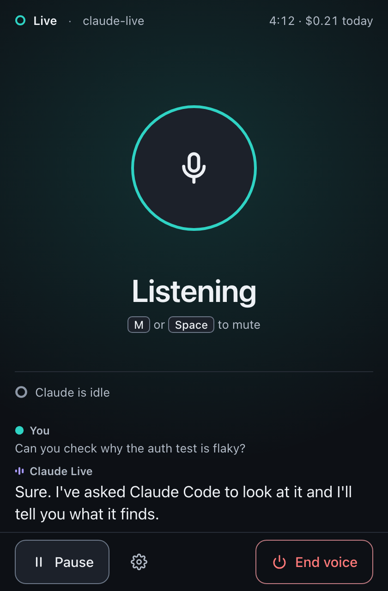
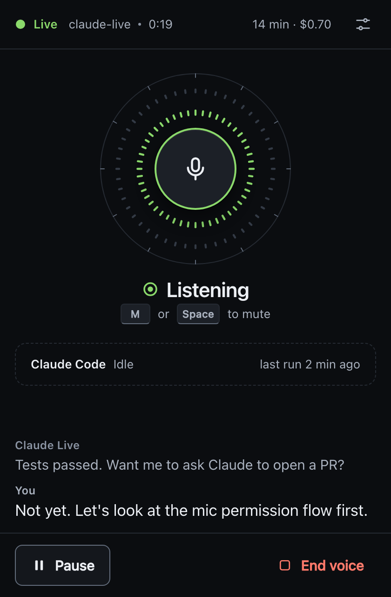
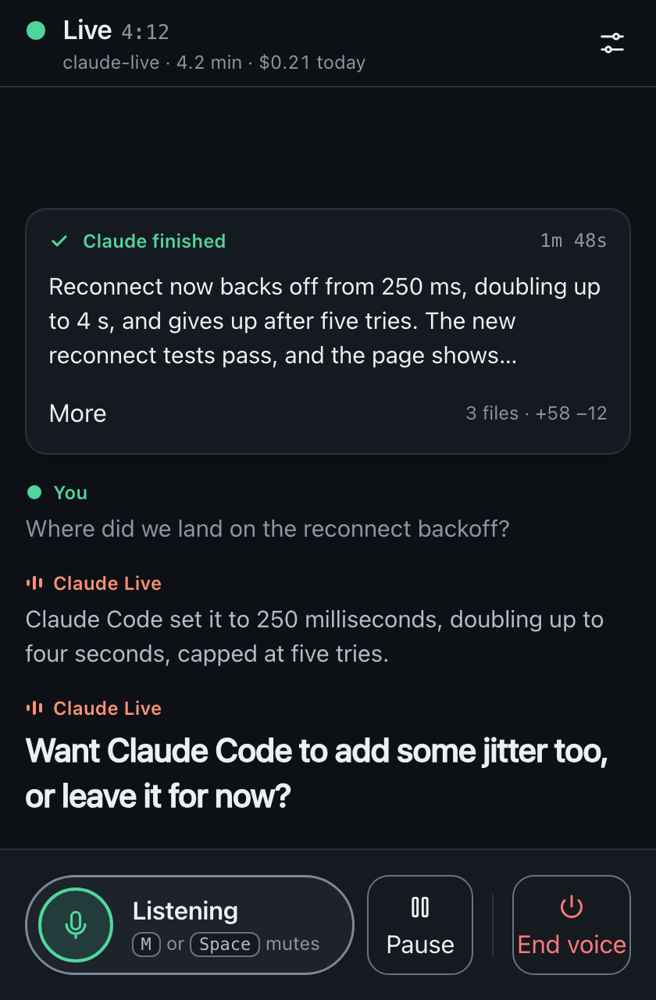

sotto voice window: three directions
Three mockups made in response to the feedback that the buttons are "really tight" and the window has an "ugly AI-slop beige color". A panel of three judges reviewed every frame of each direction against the current window (design/audit/) and the existing web/ structure. Each criterion is scored 1 to 10, averaged across the judges and rounded.
C, "Ambient companion", with parts taken from A and B
C is the easiest to read from across the desk: a 136px orb, one 34px word and a lightly tinted background. It also maps almost one-to-one onto the current DOM (.live-view, #mic-caption, #activity, #captions, footer), so it is the cheapest to build and the least risky. A has the best information design for Claude Code and the strictest contrast work. B has the best recovery and onboarding flows.
Take from the runners-up
- From A: the Claude Code card. One card for idle, working (current step plus Asked "…" for the request it serves), approval and finished. This replaces C's lighter "Claude is working" chip. Also take A's blue working arc around the orb, so work in progress shows even while the word says "Listening".
- From A: Sotto's voice as ink, not a hue. That frees violet to mean muted and removes C's pink. Pink muted and red error sit too close for users with red-green color blindness, and teal (live) versus blue (working) is close as well.
- From A: contrast measured per surface. Check every token on bg, surface-1 and surface-2 in both themes, not only on bg.
- From B: connecting as a checklist ("Found the sotto daemon, Microphone on, Connecting to the voice service…"), so a stall shows which step stopped.
- From B: a sketch of Chrome's prompt on the Allow-microphone screen, with the "Allow while visiting the site" option highlighted. Pair it with C's arrow.
- From B: approval pinned above the footer, so it is never pushed off by captions. Also take B's rule that your captions are the same size and contrast as the assistant's.
- Guardrails for C: hold the background tint for about 400ms before switching and cross-fade it, so quick turn-taking does not flicker teal and violet. At 360x420, the icon-only End button needs
aria-label="End voice"and should keep a visible "End" label as B does. Check the "not billing while paused" copy against SPEC before shipping it.
Scores
Criteria: Glance means you can read the state without focusing on the window. Complaints means it fixes the tight buttons and the beige. Polish is taste and craft. A11y is accessibility. Fit is how well it fits the existing web/ code.
| Direction | Glance | Complaints | Polish | A11y | Fit | Total /50 |
|---|---|---|---|---|---|---|
| C Ambient companion | 9 | 9 | 8 | 8 | 9 | 43 |
| A Instrument | 8 | 9 | 8 | 9 | 6 | 40 |
| B Conversation-first | 6 | 7 | 7 | 8 | 5 | 33 |
"In a voice app you look at the screen only to check who has the floor. C answers that at a glance and from across the room. A answers it only if you know the ring code. B puts the answer in a 64px pill at the bottom and gives the space to text you have just heard. B's connecting checklist is the best recovery idea of the three."
"All three get rid of the beige. A is the most distinctive: it looks like a real object, not a template. But the two rings of grey rest ticks are busy at idle. C's tinted background is lovely, and I would keep it no stronger than it is now. B's dock has label problems: 'Claude L…' and 'Speaking · t…' are truncated at 420px, and 'End voice' is squeezed into a 76px box. That is the tight-button complaint again."
"A did the most careful work: contrast is measured on every surface and violet means muted. C passes AA, but its pink muted and red error are too similar for users with red-green color blindness. Shape (dashed ring versus alert) saves it, but I would still swap the hue. B's transcript-first layout helps deaf and hard-of-hearing users most. All three have 44px targets and separate End voice from Pause."
C · Ambient companion
Recommended43/50{kind=link}

The window works like a mood light with one word in it. The background takes a soft tint of whoever has the floor: teal when it hears you, violet for Sotto, blue for Claude Code working, amber when something needs you, red for errors and pink when muted.
- The mute button (136px) is also the floor indicator. It is a thin ring when listening, a solid disk with a level halo when you speak, a sunburst when Sotto speaks, and a dashed ring with a slashed mic when muted.
- One 34px word states the state. The only loud state is approval: amber, the full command unclipped, and "Approval needed" in the header.
- Cool grey neutrals in both themes, AA text contrast, control edges at 3:1 or better.
- Every control is 44px or larger. End voice sits alone on the right. Speaking policy and the mic and speaker pickers move into a drawer behind a gear.
- An explicit "Allow microphone access" screen, separate recovery steps for each mic error, and a 360x420 collapse with no scrolling.
Strengths
- Easiest state to read at a glance; can be read from across a desk.
- Same DOM as today; the tint is just a
body[data-state]CSS variable. - Calm when idle: nothing moves while listening.
Weaknesses
- Pink muted and red error are close; teal live and blue working are close.
- The Claude Code chip is thinner than A's card (it does not show which request the step serves).
- Quick turn-taking could make the background flicker; needs damping. Reduced-motion frame not drawn.
All 16 frames (overview.png), click image for full size
{kind=link}
A · Instrument
Runner-up40/50{kind=link}

A calm pro-audio meter for the voice window: near-black cool graphite, hairline edges, no beige anywhere.
- A dial with two rings around an 88px mute button. The inner green ring is your mic (jagged ticks). The outer ring is Sotto's voice (smooth, symmetric swells). A blue bezel arc means Claude Code is working. Shape and word change with the state too.
- One color per meaning in both themes: green for live, blue for working, amber for approval, red for errors, violet for muted. Text is 4.5:1 or better and control edges 3:1 or better, measured on every surface.
- One Claude Code card for idle, working (step plus the request it serves), approval and finished (3-line summary plus "More").
- Controls are 44px or larger, settings are in a drawer, and End voice is a red text button on the far right.
- An explicit Allow-mic screen, recovery steps for each mic error, and a fixed collapse order at 360x420.
Strengths
- Best information design for Claude Code (card plus the request it serves).
- Most rigorous accessibility; violet for muted is clearly distinct.
- The most distinctive, least template-like look.
Weaknesses
- You have to learn the two-ring code; the rest ticks are busy at idle.
- Tick rings mean new SVG plus per-frame rendering for two analysers.
- Frame 09 caption is missing its speaker label; the "not billed while paused" copy is unverified.
All 15 frames (overview.png)
{kind=link}
B · Conversation-first
Third33/50{kind=link}

The conversation is the main view, set as captions. A docked 64px pill is both the mute button and the floor indicator.
- Captions, not chat bubbles. The newest line is the largest and older lines fade out; your words have the same size and contrast as the assistant's.
- The pill changes with the state: a hollow ring for listening, a green halo for you, a coral waveform for Sotto, a dashed and hatched pill when muted. Pause and a separate End voice sit to its right.
- Claude Code progress is an inline timeline (request, steps, result), ending in a 3-line summary with "More".
- Allow-mic screen with a sketch of Chrome's prompt, recovery steps for each mic error, approval pinned above the dock, "Still billing" shown while muted.
- Cool slate palette, WCAG AA, 44px or larger controls, settings drawer, no scrolling down to 360x420.
Strengths
- Best for users who rely on captions; the timeline gives the richest record of progress.
- The connecting checklist and the Chrome-prompt sketch are the best onboarding in the set.
Weaknesses
- The state lives in a small pill at the bottom edge, so it is the weakest at a glance.
- Pill labels truncate at 420px and End voice is cramped, which brings back the tight-button complaint.
- Largest rewrite: the transcript becomes the layout and chips turn into timelines.
{kind=link}